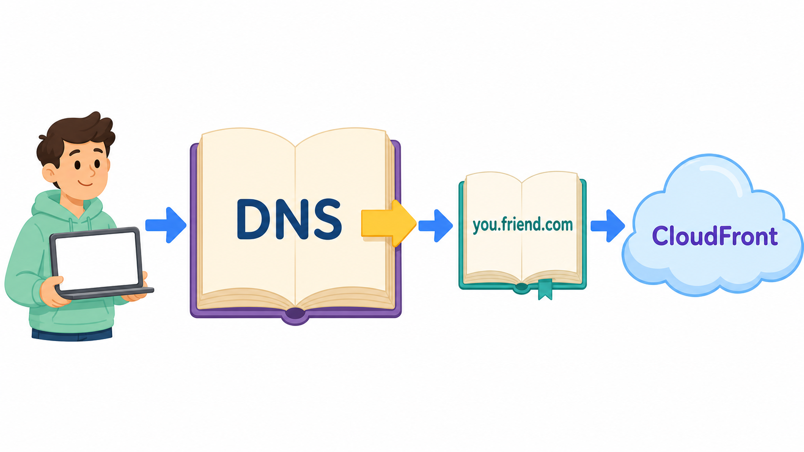
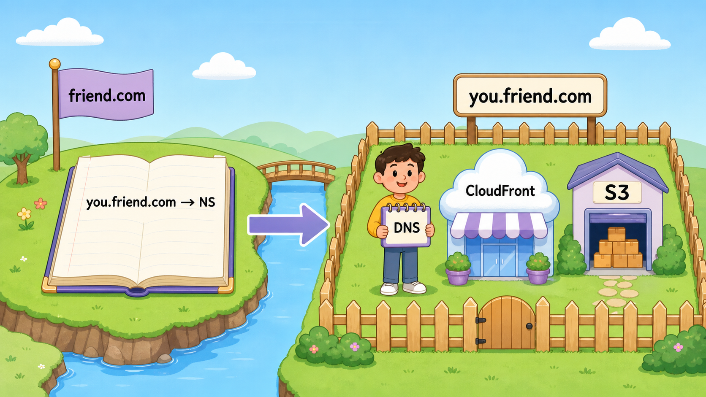
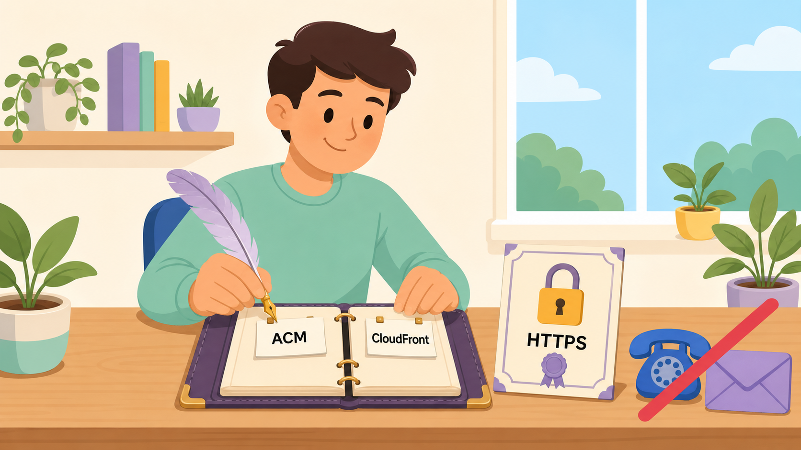

0. 方法aと何が違うの?(30秒でわかる版)
方法aは「同期の電話帳(ホストゾーン)に、頼んで書いてもらう」方式でした。 証明書の検証CNAMEも、本命のレコードも、毎回同期にお願いメッセージを送る必要がありました。
方法bは、同期の電話帳には「you.friend.com から先のページは、別の電話帳を見よ」という案内を1行だけ書いてもらいます。 その「別の電話帳」=あなたが自分のAWSアカウントに作るホストゾーン。 以降そこに何を書くかはあなたの自由——区画の鍵ごともらう方式です。

1回きりならaが簡単・無料。方法bの旨味は「以降、同期を一切待たなくていい」こと。
証明書の更新も、レコードの変更も、blog.you.friend.com みたいな孫サブドメインの追加も、全部自分だけで完結します。
会社で「部署ごとにサブドメインを委任して各チームが自分で管理する」のと同じ、実務でよく使う形です。
引き換えにホストゾーン代 月$0.50(専用の電話帳を持つあなたが払う)がかかります。
1. NSレコードって何?(これが今回の主役)
NS = Name Server。意味は「この名前の担当は、この電話帳(ネームサーバー)です」という案内板です。 DNSの世界は、実はこの案内板の連鎖でできています:
世界の大元の電話帳「.com のことは .com の電話帳に聞け」(NS)
→ .com の電話帳「friend.com のことは同期のRoute 53の4台に聞け」(NS)
→ 同期の電話帳「you.friend.com のことは"あなたの4台"に聞け」(NS)← 今回作る分岐!
→ あなたの電話帳「私のCloudFrontだよ」(Alias)
つまり friend.com 自体も、大元からNSで委任されて動いています。
方法bは同じ仕組みをもう一段深く、自分の手でやるだけ。
DNSという建物の骨組みを直接触れるので「発展」課題になっているわけです。

2. 完成形を先に見る

役割分担はこうなります。同期の作業は Step 3 の1回だけです。
あなた: ① Route 53 に you.friend.com のホストゾーンを新規作成
└ ネームサーバー4台の名前が自動発行される
あなた: ② その4台の名前を同期に送る
同期 : ③ friend.com のゾーンに NSレコードを1本追加(値=4台)
…………これで委任成立。以降、同期の出番なし…………
あなた: ④ ACM(us-east-1)で証明書を申請
└ 検証用CNAMEを【自分の】ゾーンに自分で追加 → 発行
あなた: ⑤ S3をオリジンにCloudFrontを作成
└ 代替ドメイン名 you.friend.com+証明書を装着
あなた: ⑥ 【自分の】ゾーンに本命のAliasを追加 → 公開🎉
3. 手順の詳細(なぜ、をセットで)
Step 1:ホストゾーンを作る(あなた)— 方法bの核心
- Route 53 → 「ホストゾーンの作成」
- ドメイン名:
you.friend.com(同期からもらう予定の名前) - タイプ:パブリックホストゾーン → 作成
作成すると、AWSが自動でNSレコード(4台のネームサーバー名)とSOAレコードを作ります。例:
ns-123.awsdns-45.com ns-678.awsdns-90.net ns-234.awsdns-56.org ns-789.awsdns-12.co.uk
あなた専用の「私設電話帳」がこの瞬間に生まれました。まだ世界のどこからも参照されていない、白紙の台帳です。 4台の名前はこの台帳の「住所」。月$0.50の課金対象はこれ(=専用の電話帳を持つ人が電話帳代を払う)。 自動でできたNSとSOAは台帳の「背表紙」なので、絶対に触らない・消さないこと。
Step 2:NS4台の名前を同期に送る(あなた)
ゾーンの詳細画面に表示されている NS レコードの値4行をコピーして、同期に送ります。
1文字も違わずが鉄則。手打ちせず必ずコピペで。
Step 3:同期がNSレコードを1本追加(同期の唯一の作業)
同期friend.com のホストゾーン → レコードを作成:
- レコード名:
you - タイプ:NS
- 値:届いた4行を4行とも貼る(1つの入力欄に改行区切りで入る)
「委任」の瞬間です。世界の検索経路に「you.friend.com 以下はあなたの電話帳へ」という分岐が生まれました。 以降、you.friend.com についての質問はすべてあなたの台帳に直接届くようになり、同期の電話帳は素通りされます。 だから同期の作業はこれで完全に終わり——方法aのように証明書のたびに頼む必要がなくなるのです。
💬 確認方法:反映後(数分〜1時間)、ターミナルで dig NS you.friend.com と打って、
あなたの4台が返ってくれば委任成立です。
Step 4:証明書を自分だけで取る(あなた)
- リージョンをus-east-1(バージニア北部)に切替(毎度の罠。CloudFrontはここの証明書しか見えない)
- ACM → 証明書をリクエスト → パブリック証明書 → ドメイン名
you.friend.com→ DNS検証 - 証明書の詳細画面に「Route 53 でレコードを作成」ボタンが出る → 押すだけ。検証用CNAMEが自分のゾーンに自動で入る
- 5〜10分で「発行済み(Issued)」に変わる
方法aでは検証用CNAMEを相手に送って書いてもらう必要がありました(電話帳が相手のものだったから)。 今回はyou.friend.com の電話帳の管理者はあなた自身。ACMの「地主のハンコを見せろ」という審査に、 自分のハンコを自分で押せる——ボタン一発で終わるのはそのためです。 委任のありがたみを一番実感できる場面です。
Step 5:S3+CloudFrontを用意する(あなた)
- S3バケットにサイト(例:エディンバラ紹介サイト)をアップロード。「パブリックアクセスをすべてブロック」はオンのまま
- CloudFront → ディストリビューション作成 → オリジンにそのS3、OACを設定(案内に従いバケットポリシーを貼る)
- デフォルトルートオブジェクト:
index.html - 代替ドメイン名(CNAME):
you.friend.com/ カスタムSSL証明書:Step 4のもの
S3は倉庫、CloudFrontは店。ブラウザは接続時に「you.friend.com に用があります」と名乗るので、 店側に「その名の客は私宛」というテナント届け(代替ドメイン名)と、身分証の装着(証明書の選択)が必要。 どちらか欠けると403またはSSLエラーで門前払いになります。
Step 6:本命のAliasを自分のゾーンに書く(あなた)— 公開の瞬間
- Route 53 → you.friend.com のホストゾーン(Step 1で作ったもの)→ レコードを作成
- レコード名:空欄のまま(ゾーン自体が you.friend.com なので、何も足さない)
- タイプ:A / エイリアスON → CloudFrontディストリビューション → 自分のを選択(自分のアカウントなので今回は候補にちゃんと出ます)
あなたの私設電話帳に「you.friend.com は私の店」という本命の1行が載りました。 大元 → .com → friend.com(NSで分岐)→ あなたの台帳 → CloudFront、という検索のリレーが端から端までつながった瞬間です。

Step 7:動作確認
dig NS you.friend.com # 自分の4台が返る=委任OK dig you.friend.com # AWSのIPが返る=台帳OK curl -I https://you.friend.com # HTTP/2 200 =開店
ブラウザで https://you.friend.com が🔒付きで開いたらゴール🎉
4. 方法b特有のハマりどころ
| 症状/失敗 | 原因と対処 |
|---|---|
| ときどき繋がったり繋がらなかったりする | NS4行の写し間違い(1台だけ間違いなど)。事故の9割はこれで、間違った1台に当たった質問だけ失敗する最悪の壊れ方。同期側のNSレコードを4行とも見直す。 |
| dig NS で同期のサーバーが返ってくる | 同期のNSレコード未追加、または反映待ち(数分〜1時間、まれに48時間)。 |
| ある日突然、全部繋がらなくなった | ホストゾーンを作り直した(4台の名前が変わる)。同期にNSレコードの値を新しい4台に更新してもらう。むやみに作り直さないこと。 |
| ACMの「Route 53でレコード作成」ボタンが出ない/失敗する | ホストゾーン未作成、またはゾーン名と証明書のドメイン名の不一致。 |
| NXDOMAINになる | Step 6のAlias未作成。またはレコード名に余計な文字を入れた(空欄が正解)。 |
| 毎月謎の$0.50 | ホストゾーン代。仕様です。課題が終わって使わないなら、同期にNSレコードを消してもらってからゾーンを削除。 |
5. 方法a/bの総まとめ
| 方法a(レコードを足してもらう) | 方法b(NS委任) | |
|---|---|---|
| 同期に頼む回数 | 2回(検証CNAME+本命)。以後も変更のたび | 1回(NS1本)。以後ゼロ |
| 証明書の検証 | 同期に書いてもらう | 自分でボタン一発 |
| 孫サブドメイン(blog.you.〜等) | そのたび同期に依頼 | 自由に作り放題 |
| 費用 | 0円 | 月$0.50(あなた持ち) |
| 同期側に残るもの | CNAME/Alias 2本 | NS 1本だけ |
| 学べること | DNS検証・クロスアカウント連携 | DNSの委任構造そのもの |
💬 同期に送るメッセージのテンプレ(方法bはこれ1通で終わり):
お願い(1回だけ):
friend.com のホストゾーンに、NSレコードを1本追加してください。
レコード名: you
タイプ: NS
値(4行とも):
ns-123.awsdns-45.com
ns-678.awsdns-90.net
ns-234.awsdns-56.org
ns-789.awsdns-12.co.uk
これ以降の you.friend.com の管理は全部こちらでやります!